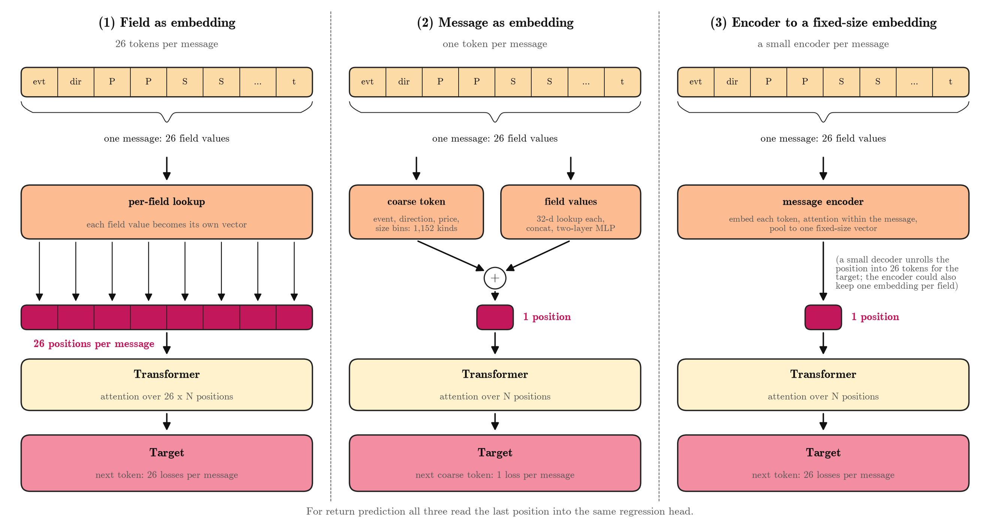
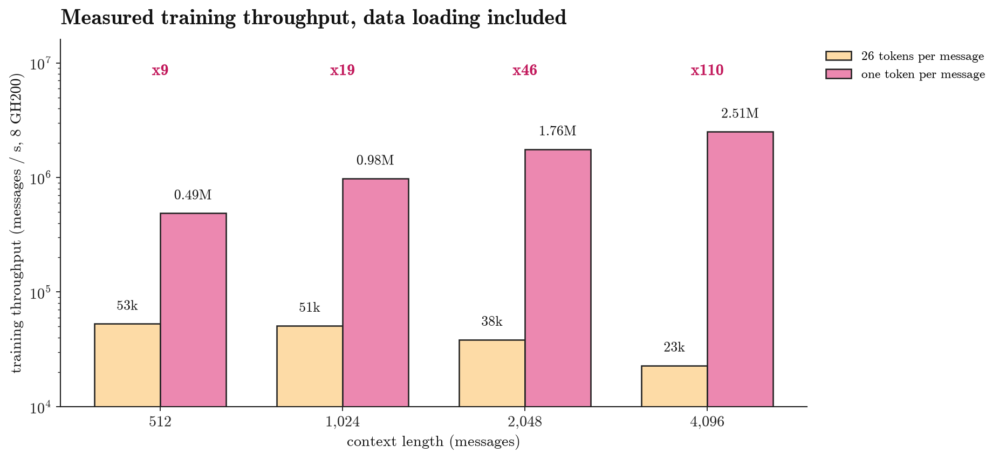
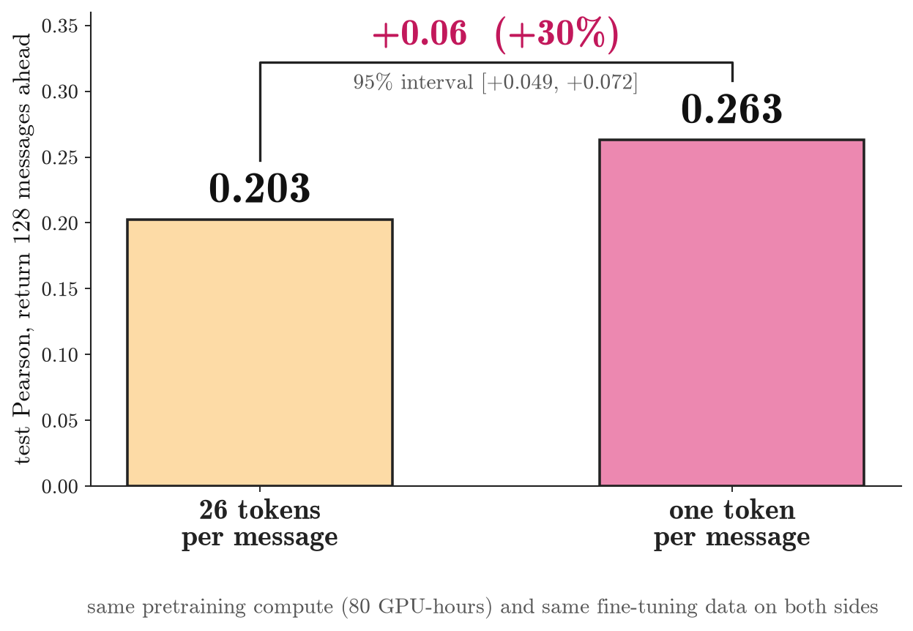

Our order-book language model reads the market as a stream of messages: new orders, cancellations, deletions and executions. Until now each message was split into 26 sub-tokens (event type, direction, price digits, size digits, time, …), and the Transformer saw every one of them as its own position. That is the natural choice if you want to generate messages. But if the goal is to predict returns, it may be wasteful.
This post tests the simplest alternative: give each message one position. With the same pretraining compute and fine-tuning data, the one-token model predicts the mid-price return 128 messages ahead with a test Pearson of 0.263, against 0.203 for the 26-token model, and pretraining one pass over the data costs about 10 GPU-hours instead of 1,100.
1. The idea

Figure 1 shows three ways to feed a message to the Transformer: (1) every field is its own position, the model we had so far; (2) the whole message is one position, the model tested here; (3) a small encoder pools the message into one fixed-size vector. This post compares (1) and (2).
Input: one vector per message. All 26 field values of a message are still read; nothing is dropped. They are compressed before the Transformer into one vector, the sum of two parts:
- a coarse token, a lookup over 1,152 kinds that summarise the message (Section 2);
- the field values: each of the 26 field values gets a 32-dimensional lookup, these are concatenated and passed through a small two-layer MLP. Its last layer starts at zero, so training begins from the coarse token alone.
Target: the next message's coarse token. Each position predicts one of 1,152 classes, so there is one loss per message instead of 26. The field values are input only.
Everything else is unchanged. The Transformer (width 512, 6 layers) and the regression head that reads the last position to predict returns are the same as in the 26-token model. The whole model has 22.1 M parameters, against 29.2 M for the 26-token model; the difference is the output side.
What we give up: the model can no longer generate full messages, so it cannot roll out a simulated market. For return prediction we do not need that.
2. The coarse token
The coarse token is computed from the message's own fields, so no change to the data pipeline is needed.
| Field | Bins | Count |
|---|---|---|
| Event | new order, cancellation, deletion, execution | 4 |
| Direction | buy, sell | 2 |
| Price vs. mid | above, at or below | 2 |
| Price distance (ticks) | 0, 1, 2, 3, 4–5, 6–10, 11–50, 51–200, > 200 | 9 |
| Size (shares) | < 50, 50–99, 100–199, ≥ 200 | 4 |
| Round lot | size is a multiple of 100 | 2 |
| Total | 4 \times 2 \times 2 \times 9 \times 4 \times 2 | 1,152 |
The price bins reach far from the mid because price distances have a long tail (median 271 ticks). On 372 thousand real messages, 403 of the 1,152 kinds occur.
3. Why it is so much faster

A window of N messages becomes N positions instead of 26N. Attention cost grows with the square of the sequence length, so the saving grows with context:
while the per-position parts (embeddings, MLPs) shrink by about 26 times. Measured end to end, data loading included, on 8 GH200 GPUs with the same batch of 80 windows:
| 26 tokens per message | One token per message | |
|---|---|---|
| Messages per second at 4,096-message context | 22.9 thousand | 2.51 million |
| GPU-hours per pass over 11.2 billion training messages | ~1,100 | ~10 |
| Passes in 80 GPU-hours | 0.11 | ~8 |
The speed-up is 9× at a 512-message context and 110× at 4,096. In other words, with the compute budget the 26-token model used to see a tenth of the data once, the one-token model can see all of it several times.
4. Return prediction
At a decision point the model has read the last 3,968 messages of one stock and predicts the mid-price return 128 messages later. We score both models on the same 70,183 test decisions (432 US stocks, January 2026), with the same pretraining compute (80 GPU-hours) and the same fine-tuning data.

One token per message predicts returns about 30% better: Pearson 0.263 against 0.203.